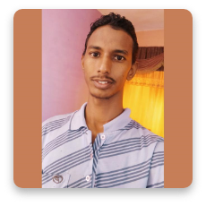

OMER ABDELWHAB
Phone No: 0999162916
khartoum-sudan

Experience
2020–NOW
CTO • ABJAD SOLUTIONS FOUNDATION, Riyadh, KSA
I’m the highest technology executive position within ABJAD
Solutions Foundation. I lead the technology and engineering
department. In which we develop policies and procedures and use
technology to enhance products and services that focus on our customer’s
needs.
2017 - NOW
CEO • SINAD INFORMATION TECHNOLOGY SOLUTIONS
CO.LTD, Khartoum, Sudan
I’m responsible for providing strategic, financial and operational
leadership for the company and I do the coordination and work with the
Board of Directors and senior leadership team.
2017 - NOW
TECHNOLOGY DEPARTMENT HEAD • NATALAM BRANA
INITIATIVE, Khartoum, Sudan
I’m responsible of developing and delivering a new curriculum to help
students learn web development in an efficient and fun way. I developed
and applied new teaching and educational techniques, which helped to
deliver amazing and surprising results in the courses outcomes.
skills
Experienced full-stack web/mobile developer, I translate client's ideas to
useable and functional web/mobile applications. Moreover, I turn client's
problems into beneficial solutions. Programming and web/mobile apps
development instructor, where I leverage my communication skills to
build caring relationships with students in order to be able to apply
effective education techniques to reach the learning goals.
-
Programming Languages: JavaScript, PHP, Dart, Python,
Java, and C\c++
-
Web Technologies and Platform: HTML, CSS, AWS
-
Frameworks & Libraries: W3.CSS, Bootstrap, Express.js,
React.js, Laravel, Flutter, and JQuery
-
Other skills: Google Workspace for Education (classroom),
Microsoft Office, Adobe Photoshop, and Adobe XD.
Education
-
COMPUTER SCIENCE BACHELOR'S • 2018 • NEELAIN
UNIVERSITY
PUBLIC SPEAKING EXPERIENCE
-
TEDX SPEAKER • 2018 • TEDX NEELAIN UNIVERSITY
-
SUCCESS ROAD EVENT SPEAKER • 2017 • NATALAM
BRANA INITIATIVE
-
LIGHT TALK SPEAKER • 2017 • SIU
VOLUNTEER EXPERIENCE OR LEADERSHIP
-
I volunteered to teach web development to some students in college and I
helped to create some knowledge sharing communities. I founded an
innovative educational initiative in Sudan, It is called Natalam Brana (We
self-learn), in which we encourage people to learn by themselves. We
develop a handy map, which guides the students through the learning
journey from A to Z.